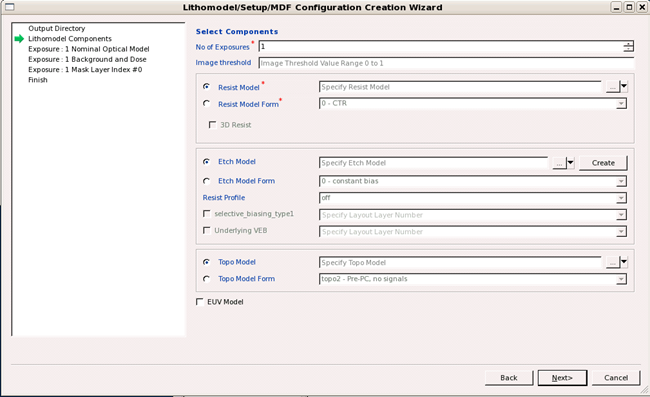

The first part of creating a topo-enabled
litho model in Calibre nmModelflow involves setting the output directory
and adding the resist and topo models.
Prerequisites
Calibre
WORKbench invoked from a working directory and the Calibre nmModelflow window
open.
A resist model
matching your resist configuration is recommended.
A topo model
matching your topo configuration is recommended.
Procedure
- In Calibre
nmModelflow, select File > Create Lithomodel to
open the Lithomodel Creation Wizard. The wizard lists each step
that requires input (Output Lithomodel Directory, Lithomodel Components,
Exposure, and Finish).
- In the
Output Lithomodel Directory page, enter or navigate to an empty
directory to contain the completed litho model. (You can create
a new directory from the file chooser dialog.)
- In the
Lithomodel Components page, select options as follows:
- Resist Model or Resist Model Form
If you have a resist model, choose Resist Model and fill
in the directory path to the model. Choose Resist Model Form if
you do not have a resist model. If you choose a Resist Model Form,
Siemens EDA suggests using Modelform 21 to start.
Do not select the 3D Resist checkbox. 3D Resist is not used for
topo models.
- Etch
Model or Etch Model Form
Leave the setting at Etch Model and do not fill in an etch
model file; etch models are not used for topo modeling.
- Topo
Model or Topo Model Form
If you have a topo model available, choose Topo Model and
fill in the directory path to your topo model. Choose Topo Model Form
if you do not have a topo model.
Note: For post-PC
configurations, you must pick a Topo Model Form that contains the prefix
“topo3” in order to be prompted for the third optical model, or
import a topo model that contains the keyword “transit 0 1 2”.
If you pick Topo Model Form, it is helpful if you pick a modelform
that is similar to your configuration; the wizard adjusts future
prompts based on your choice. For example, picking a Topo Model
Form of “topo2STF” creates an additional Exposure entry and a topo
model that contains S-terms, T-terms, and F-terms.
Note: Starting
with the 2017.4 release, you can reuse litho models that contain
Topo Modelforms with extra signals, as long as you deactivate the
extra signals with the “mdf param topo_<signal>termnum
0” command before running a calibration job with those litho models.
- EUV Model
Do not select the EUV Model checkbox.
Figure 1. Lithomodel
Components Page (Resist and Topo Selection)
- Click Next to
continue, and go to the next task.